PIXELCRAFT visual quality audit · 2026-11-05T13:38:30+00:00 · method pixelcraft-1.0
Taskboard (PIXELCRAFT sample app)
GITCRAFT/tests/fixtures/pixelcraft/taskboard
Confidence: browser emulation only (no physical-device evidence). Coverage and confidence are separate from quality; nothing is capped or awarded for code existing.
2 · Category scores
| Category | Area | Points | Awarded | Weakest metric | Evidence |
|---|---|---|---|---|---|
| Visual Quality | Spacing and rhythm | 25 | 15.1 | related elements evenly spaced · 20% | measured ×81 |
| Visual Quality | Layout and composition | 25 | 20.9 | no horizontal overflow · 52% | measured ×148 |
| Visual Quality | Typography and hierarchy | 20 | 14.2 | text large enough to read · 40% | measured ×72 |
| Visual Quality | Buttons and controls | 20 | 11 | neighbouring targets not crowded · 17% | measured ×120 |
| Visual Quality | Visual consistency | 10 | 10 | controls share radii and a small palette · 100% | measured ×48 |
| Usability | Interaction efficiency | 25 | 22.9 | no unnecessary confirmation steps · 58% | measured ×18 |
| Usability | Navigation and discoverability | 20 | 20 | every screen within 2 taps · 100% | measured ×19 |
| Usability | Mobile ergonomics | 25 | 17.6 | fixed controls clear the notch and home indicator · 15% | measured ×89 |
| Usability | Feedback and interaction states | 15 | 5.6 | disabled controls look disabled · 0% | measured ×26 |
| Usability | Accessibility | 15 | 7.6 | keyboard focus is visible · 2% | accessibility ×24, measured ×8 |
| Consistency | Cross-screen consistency | 25 | 13.7 | primary buttons look the same on every screen · 25% | measured ×12 |
| Consistency | Component consistency | 25 | 13.6 | inputs share one height · 40% | measured ×12 |
| Consistency | Responsive consistency | 20 | 16.3 | fits every viewport · 72% | measured ×8 |
| Consistency | Design system adherence | 20 | 13 | spacing tokens (4-px grid) · 43% | measured ×24 |
| Consistency | State consistency | 10 | 8 | hover treatment applied consistently · 50% | measured ×4 |
3 · Strongest screens
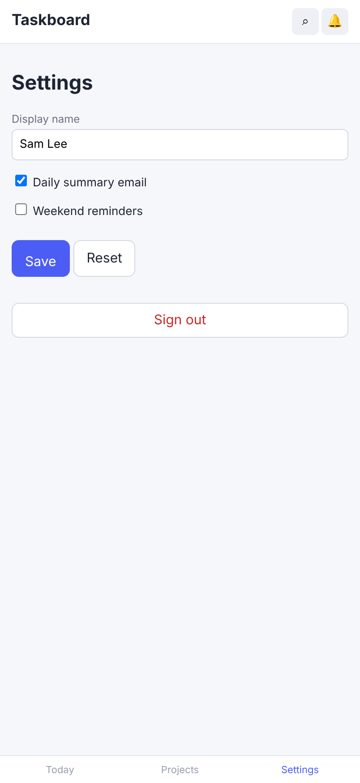
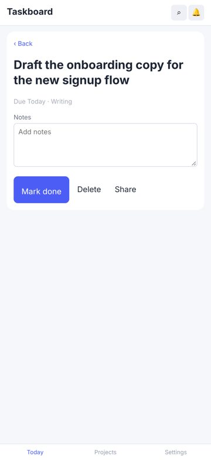
4 · Weakest screens
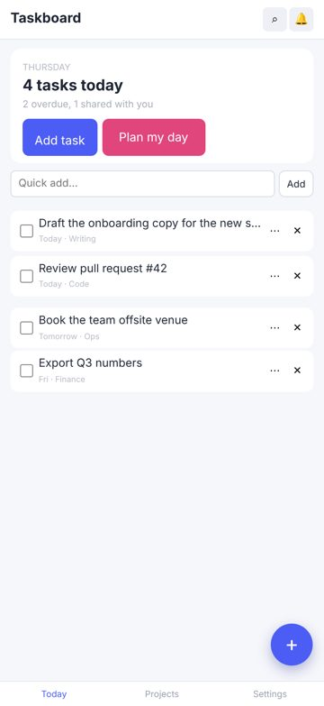
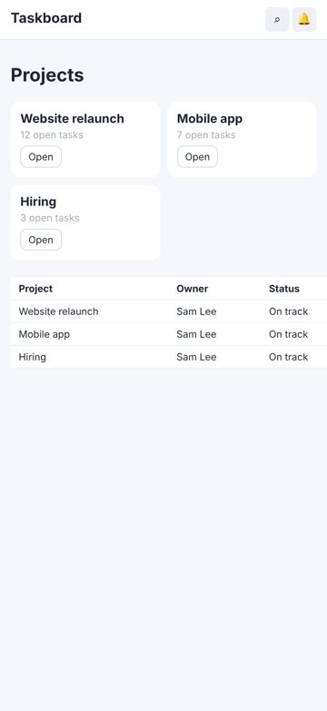
5 · Critical usability defects
Accessibility: Elements must meet minimum color contrast ratio thresholds
major Accessibility (axe-core)seen 24×fix now
axe-core rule color-contrast (wcag2aa, wcag143): Elements must meet minimum color contrast ratio thresholds.
Fix: See https://dequeuniversity.com/rules/axe/4.10/color-contrast?application=axeAPI — Fix any of the following: Element has insufficient color contrast of 1.98 (foreground color: #b4b8c4, background color: #ffffff, font size: 8.3pt (11px), font weight: normal). Expected contrast rati
Where and what was measured
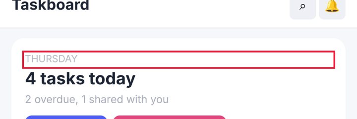
Controls are too close together
major Measured (rendered DOM)seen 24×fix now
'Search' and 'Notifications' are 3 px apart and at least one is under 44 px: an easy mis-tap.
Fix: Keep at least 8 px between targets (more next to destructive actions), or merge rarely used actions into one overflow menu.
Where and what was measured
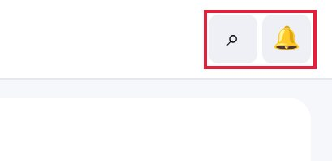
Bottom controls sit under the home indicator
major Measured (rendered DOM)seen 16×fix now
With the iPhone's 34-px bottom safe area emulated, this fixed control extends 34 px into the home-indicator zone, where swipes go to the system instead of the app.
Fix: Pad fixed bottom bars with env(safe-area-inset-bottom): padding-bottom: calc(8px + env(safe-area-inset-bottom)).
Where and what was measured
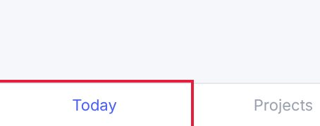
Focusing a field zooms the page on iPhone
major Measured (rendered DOM)seen 15×fix now
The field's font-size is 13 px; iOS Safari zooms in on any input under 16 px and leaves the page zoomed after typing.
Fix: Use font-size: 16px (1rem) for inputs, selects and textareas on mobile.
Where and what was measured
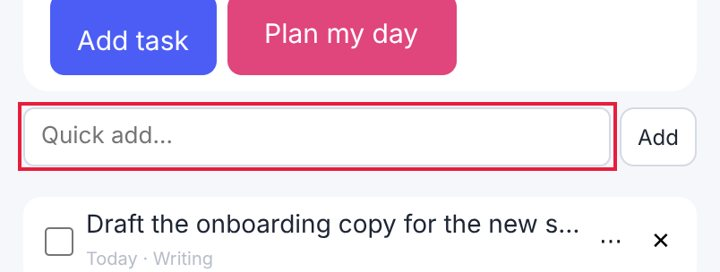
No pressed (active) state
major Measured (rendered DOM)seen 8×fix now
Pressing this control changes nothing visually until the action completes; on touch screens there is no hover, so this is the only immediate confirmation of a tap.
Fix: Add an :active style (darker tone, scale 0.97, or ripple) to every button and link variant.
Where and what was measured
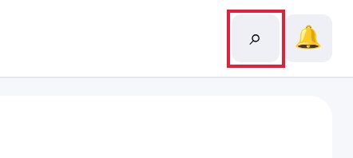
Keyboard focus is invisible
major Measured (rendered DOM)seen 4×fix now
Tabbing to this control changes nothing on screen (outline removed, no replacement), so keyboard users cannot see where they are (WCAG 2.4.7).
Fix: Never remove outlines without a replacement: use :focus-visible { outline: 2px solid <brand>; outline-offset: 2px }.
Where and what was measured
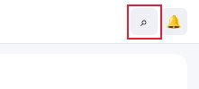
Disabled control looks enabled
major Measured (rendered DOM)seen 2×next
This disabled control has exactly the same colours and opacity as enabled controls of its kind; users tap it and nothing happens.
Fix: Give disabled controls a distinct style (reduced contrast/opacity, no shadow) and cursor: not-allowed.
Where and what was measured
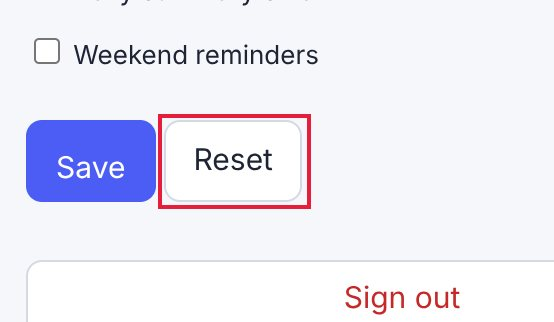
Unnecessary confirmation steps
major Measured (rendered DOM)seen 2×next
'complete a task' asked for confirmation 2 time(s) for one action: friction that trains users to click through.
Fix: Confirm once at most — better, act immediately and offer Undo (a snackbar for 5-8 s).
Where and what was measured
A tap produces no visible response
major Measured (rendered DOM)seen 2×next
In 'rename myself', tapping {'click': 'Save'} changed nothing on the page within 700 ms.
Fix: Acknowledge every tap immediately (pressed state, spinner, toast) even when the result takes time.
Where and what was measured
6 · Spacing and layout defects
Text is too small to read comfortably
major Measured (rendered DOM)seen 21×fix now
10-px text is below the 12-px minimum for phones; secondary information (dates, tags, captions) becomes hard to read.
Fix: Use at least 12 px (13-14 px preferred) for secondary text and keep hierarchy with weight and colour rather than very small sizes.
Where and what was measured
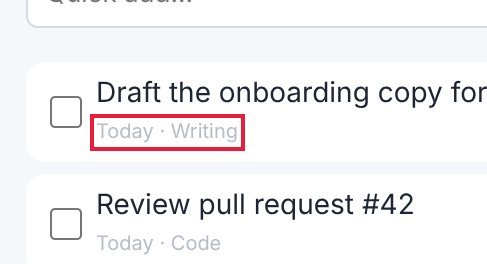
Heading levels are visually inverted
minor Measured (rendered DOM)seen 24×fix now
An h1 (17 px) is smaller than an h2 (19 px) on the same screen, so the visual hierarchy contradicts the document structure.
Fix: Make heading sizes follow their level, or change the element level to match its visual role.
Where and what was measured
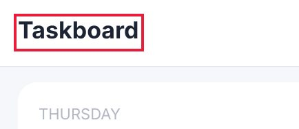
Page scrolls sideways (horizontal overflow)
critical Measured (rendered DOM)seen 3×fix now
The page is 573 px wide in a 402 px viewport: content is cut off and the whole page wobbles sideways when scrolled with a thumb.
Fix: Let the offending element shrink (max-width: 100%, min-width: 0 on flex children) or scroll it inside its own container (overflow-x: auto).
Where and what was measured
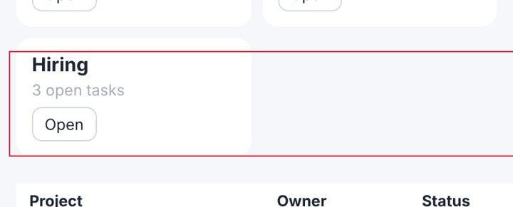
Uneven spacing between related elements
major Measured (rendered DOM)seen 6×fix now
Items of the same kind in one list or stack are separated by different gaps, which reads as grouping that isn't there and makes the list look broken.
Fix: Give the container one gap (flex/grid `gap`, or one margin rule for all items) instead of per-item margins.
Where and what was measured
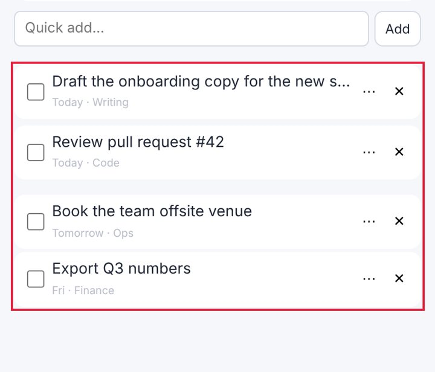
Spacing does not follow a consistent scale
minor Measured (rendered DOM)seen 12×fix now
Paddings, gaps and margins use many unrelated values, so the rhythm between elements looks accidental rather than designed.
Fix: Adopt a spacing scale (4/8-px steps: 4, 8, 12, 16, 24, 32) as tokens and replace one-off values with the nearest step.
Where and what was measured
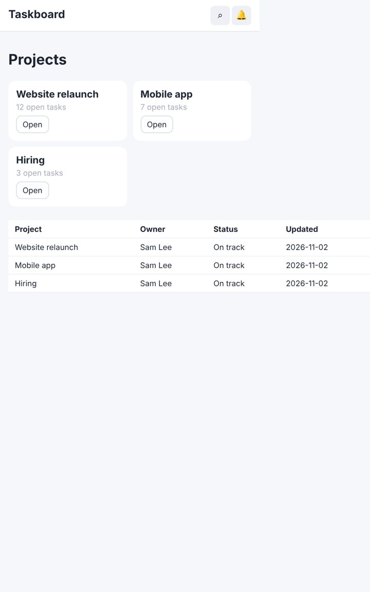
Controls stretch across the desktop window
minor Measured (rendered DOM)seen 3×next
A 1366-px-wide input on a 1440-px screen: the mobile full-width style was never adapted, so the control looks bloated and the eye travels far.
Fix: Cap form and button widths on desktop (max-width 480-560 px) or lay forms out in a constrained column.
Where and what was measured
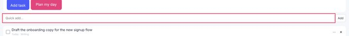
Text is truncated
minor Measured (rendered DOM)seen 3×next
Content is cut off with an ellipsis or clipped; on phones important words (task names, prices) disappear.
Fix: Allow two lines (line-clamp: 2) for primary labels, or give the label the space the trailing controls take.
Where and what was measured
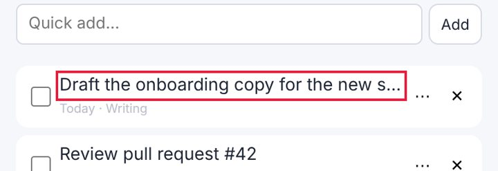
7 · Button and control defects
Touch target is too small
major Measured (rendered DOM)seen 20×fix now
16×16 px: under the 44×44 pt Apple HIG minimum (24 px is the WCAG 2.2 floor); thumbs miss and hit neighbours.
Fix: Enlarge the hit area to 44×44 (padding, min-height/min-width, or an ::after hit-area) while keeping the visible glyph size.
Where and what was measured
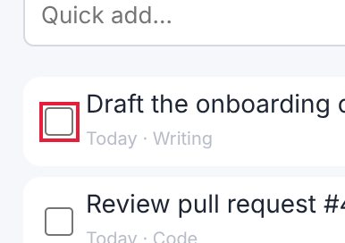
No pressed (active) state
major Measured (rendered DOM)seen 8×fix now
Pressing this control changes nothing visually until the action completes; on touch screens there is no hover, so this is the only immediate confirmation of a tap.
Fix: Add an :active style (darker tone, scale 0.97, or ripple) to every button and link variant.
Where and what was measured
Two primary actions compete
minor Measured (rendered DOM)seen 6×next
'Plan my day' and 'Add task' are both strongly filled, similar in size and side by side, so neither reads as the main action.
Fix: Keep one filled primary button per group; make the other secondary (outline or tonal).
Where and what was measured
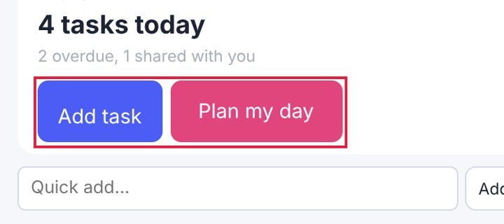
No hover state
minor Measured (rendered DOM)seen 4×next
The pointer over this control changes nothing (colour, shadow, underline), so it does not signal that it is clickable.
Fix: Add a hover style (tone shift, underline, elevation) for every interactive component variant.
Where and what was measured

Disabled control looks enabled
major Measured (rendered DOM)seen 2×next
This disabled control has exactly the same colours and opacity as enabled controls of its kind; users tap it and nothing happens.
Fix: Give disabled controls a distinct style (reduced contrast/opacity, no shadow) and cursor: not-allowed.
Where and what was measured
Click target is below 24 px
minor Measured (rendered DOM)seen 2×polish
16×16 px: under the WCAG 2.2 24×24 px minimum target size.
Fix: Enlarge the hit area to 44×44 (padding, min-height/min-width, or an ::after hit-area) while keeping the visible glyph size.
Where and what was measured
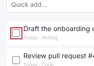
A control is covered by another element
major Measured (rendered DOM)seen 1×polish
Tapping the centre of this control hits a different element (often a fixed bar or floating button), so the control is hard or impossible to use.
Fix: Reserve space for fixed/floating elements (padding-bottom on the scroll area equal to their height) or move the floating element.
Where and what was measured
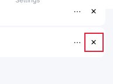
8 · Mobile-specific findings
Controls are too close together
major Measured (rendered DOM)seen 24×fix now
'Search' and 'Notifications' are 3 px apart and at least one is under 44 px: an easy mis-tap.
Fix: Keep at least 8 px between targets (more next to destructive actions), or merge rarely used actions into one overflow menu.
Where and what was measured
Bottom controls sit under the home indicator
major Measured (rendered DOM)seen 16×fix now
With the iPhone's 34-px bottom safe area emulated, this fixed control extends 34 px into the home-indicator zone, where swipes go to the system instead of the app.
Fix: Pad fixed bottom bars with env(safe-area-inset-bottom): padding-bottom: calc(8px + env(safe-area-inset-bottom)).
Where and what was measured
Focusing a field zooms the page on iPhone
major Measured (rendered DOM)seen 15×fix now
The field's font-size is 13 px; iOS Safari zooms in on any input under 16 px and leaves the page zoomed after typing.
Fix: Use font-size: 16px (1rem) for inputs, selects and textareas on mobile.
Where and what was measured
Main action is at the top of the phone screen
minor Measured (rendered DOM)seen 3×polish
The primary action sits in the top fifth of a tall phone screen, the hardest zone to reach one-handed.
Fix: Repeat or move the main action to the lower half (a bottom action bar or floating button).
Where and what was measured
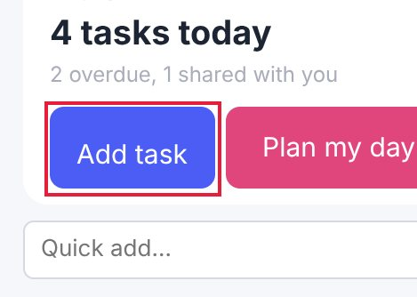
9 · Screenshot gallery
Browser emulation (Playwright + Chromium; iPhone safe areas emulated through CDP). No physical-device evidence was supplied.
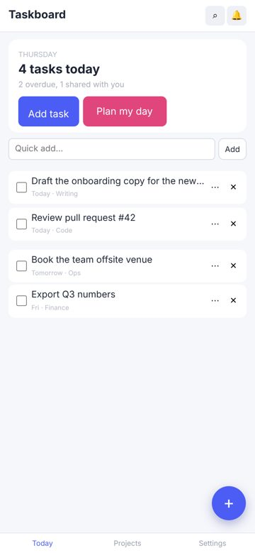
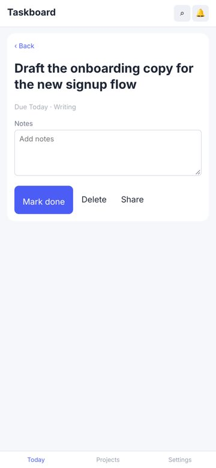
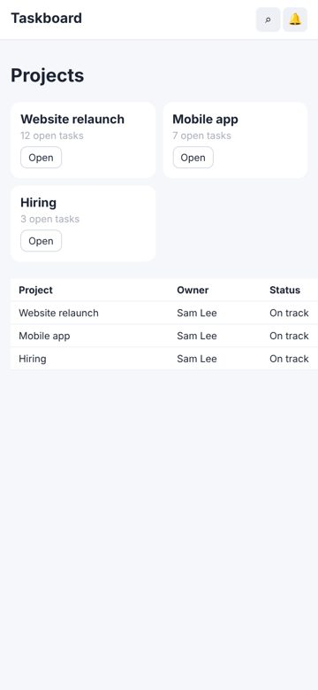
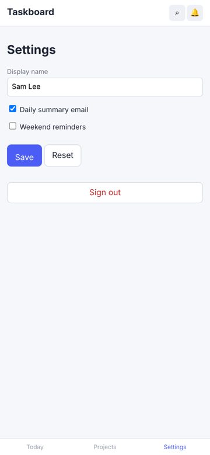
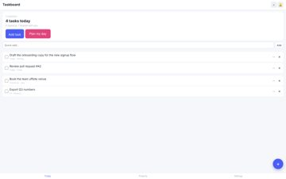
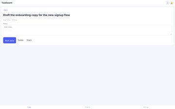
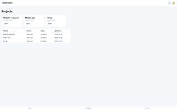
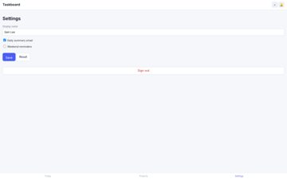
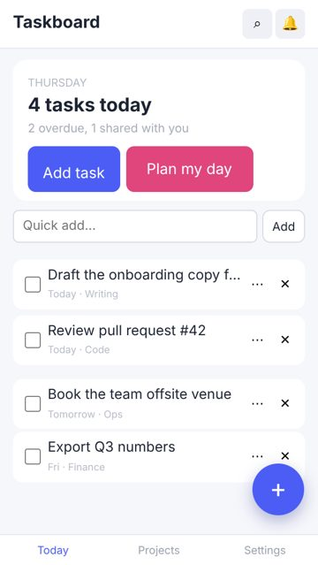
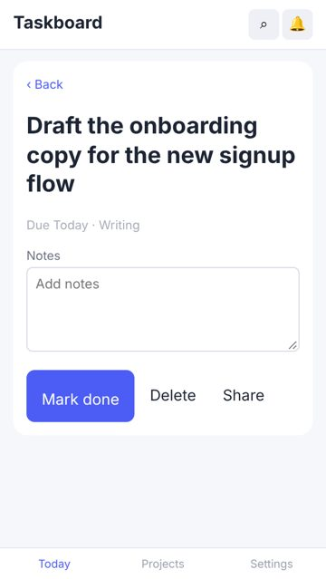
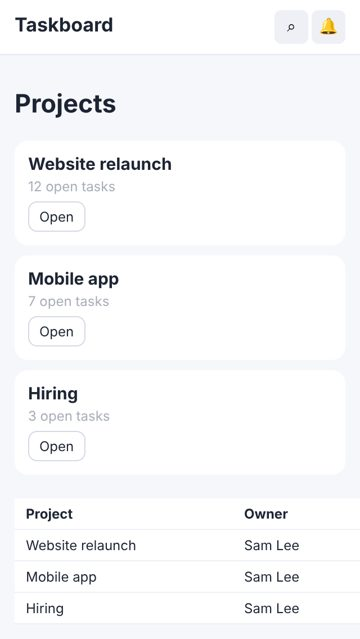
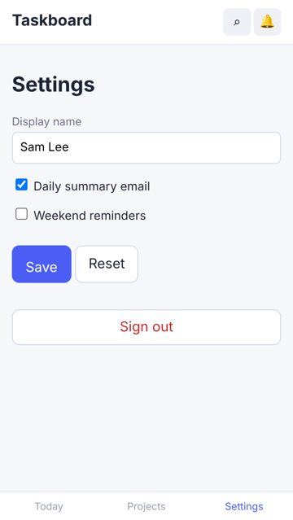
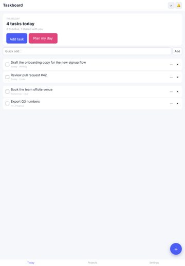
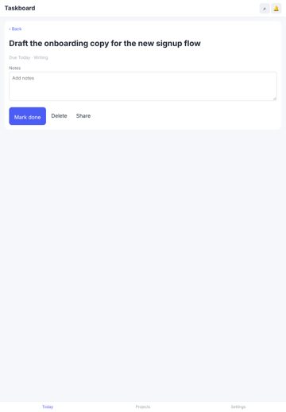
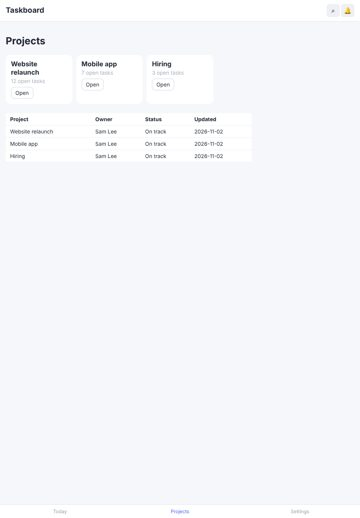
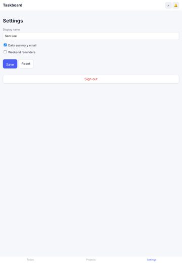
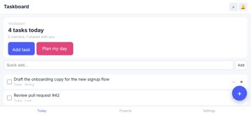
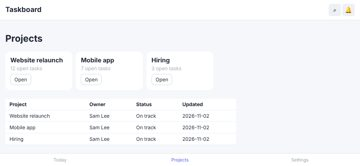
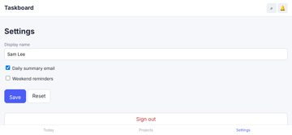
10 · Prioritised improvement plan
| # | Tier | Fix | Severity | Seen | Cost |
|---|---|---|---|---|---|
| 1 | fix now | Accessibility: Elements must meet minimum color contrast ratio thresholds See https://dequeuniversity.com/rules/axe/4.10/color-contrast?application=axeAPI — Fix any of the following: Element has insufficient color contrast of 1.98 (foreground color: #b4b8c4, background color: #ffffff, font size: 8.3pt (11px), font weight: normal). Expected contrast rati | major | 24× | low |
| 2 | fix now | Controls are too close together Keep at least 8 px between targets (more next to destructive actions), or merge rarely used actions into one overflow menu. | major | 24× | low |
| 3 | fix now | Text is too small to read comfortably Use at least 12 px (13-14 px preferred) for secondary text and keep hierarchy with weight and colour rather than very small sizes. | major | 21× | low |
| 4 | fix now | Touch target is too small Enlarge the hit area to 44×44 (padding, min-height/min-width, or an ::after hit-area) while keeping the visible glyph size. | major | 20× | low |
| 5 | fix now | Bottom controls sit under the home indicator Pad fixed bottom bars with env(safe-area-inset-bottom): padding-bottom: calc(8px + env(safe-area-inset-bottom)). | major | 16× | low |
| 6 | fix now | Focusing a field zooms the page on iPhone Use font-size: 16px (1rem) for inputs, selects and textareas on mobile. | major | 15× | low |
| 7 | fix now | Heading levels are visually inverted Make heading sizes follow their level, or change the element level to match its visual role. | minor | 24× | low |
| 8 | fix now | No pressed (active) state Add an :active style (darker tone, scale 0.97, or ripple) to every button and link variant. | major | 8× | low |
| 9 | fix now | Page scrolls sideways (horizontal overflow) Let the offending element shrink (max-width: 100%, min-width: 0 on flex children) or scroll it inside its own container (overflow-x: auto). | critical | 3× | low |
| 10 | fix now | Uneven spacing between related elements Give the container one gap (flex/grid `gap`, or one margin rule for all items) instead of per-item margins. | major | 6× | low |
| 11 | fix now | Keyboard focus is invisible Never remove outlines without a replacement: use :focus-visible { outline: 2px solid <brand>; outline-offset: 2px }. | major | 4× | low |
| 12 | fix now | Spacing does not follow a consistent scale Adopt a spacing scale (4/8-px steps: 4, 8, 12, 16, 24, 32) as tokens and replace one-off values with the nearest step. | minor | 12× | medium |
| 13 | next | Two primary actions compete Keep one filled primary button per group; make the other secondary (outline or tonal). | minor | 6× | low |
| 14 | next | The same heading level has different sizes on different screens Style headings once, globally, from the type scale. | minor | 6× | low |
| 15 | next | No hover state Add a hover style (tone shift, underline, elevation) for every interactive component variant. | minor | 4× | low |
Journeys
| Journey | Viewport | Result | Taps | Confirmations | Feedback ms |
|---|---|---|---|---|---|
| complete a task | iphone17 | ok | 2 / 2 | 2 | 116, 59 |
| quick-add a task | iphone17 | ok | 1 / 1 | 0 | 57 |
| rename myself | iphone17 | ok | 2 / 2 | 0 | 114, None |
| complete a task | desktop | ok | 2 / 2 | 2 | 115, 49 |
| quick-add a task | desktop | ok | 1 / 1 | 0 | 33 |
| rename myself | desktop | ok | 2 / 2 | 0 | 113, None |
Evidence and limits
- Every viewport is browser emulation (Playwright + Chromium 153.0.8010.12); iPhone sizes are CSS pixels and safe-area insets are emulated through CDP (Emulation.setSafeAreaInsetsOverride). Safari-specific rendering (WebKit), the real on-screen keyboard and physical reach are not reproduced.
- Browser chrome: the first screen is re-measured with the viewport shortened by 120 px (Safari's toolbars); dynamic toolbar collapse is not reproduced.
- Keyboard interference: fields that would zoom on focus (font-size < 16 px) are measured; whether the on-screen keyboard covers a field is not testable in emulation.
- Hover/pressed/focus states are sampled once per visual variant of control; focus visibility comes from real Tab presses (desktop).
- Canvas-drawn interfaces (games): the DOM does not describe what is drawn, so DOM-geometry metrics cover only the HTML overlay (HUD, menus); use judgements for the canvas.
- No physical-device evidence: findings are emulation results, not device results.